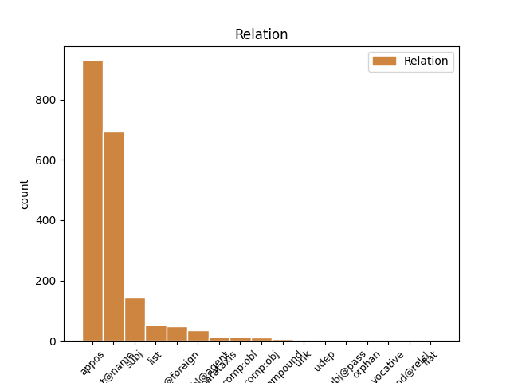
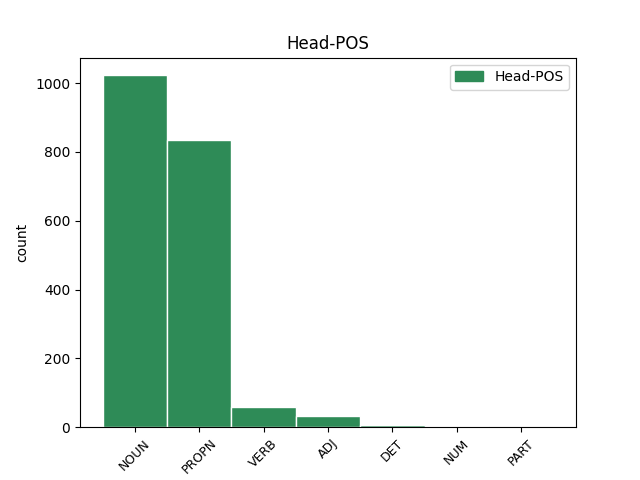
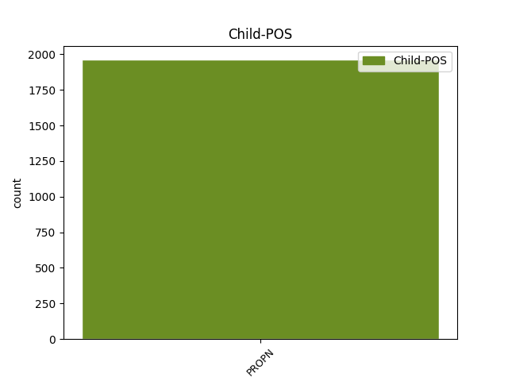

Distribution of features within this leaf



Agreement Rules sorted by frequency.
- When the dependent token is the flat multiword expression(flat@name) of the head token, and the dependent token is PROPN.
1 Через _ _ _ _ 0 _ _ _
2 две _ _ _ _ 0 _ _ _
3 недели _ _ _ _ 0 _ _ _
4 в _ _ _ _ 0 _ _ _
5 ответном _ _ _ _ 0 _ _ _
6 поединке _ _ _ _ 0 _ _ _
7 на _ _ _ _ 0 _ _ _
8 стадионе _ _ _ _ 0 _ _ _
9 `` _ _ _ _ 0 _ _ _
10 Гролс Гролс PROPN NNP Animacy=Inan|Case=Loc|Gender=Masc|Number=Sing 0 _ _ _
11 Весте Весте PROPN NNP Animacy=Inan|Case=Loc|Gender=Neut|Number=Sing 10 flat@name _ SpaceAfter=No
12 '' _ _ _ _ 0 _ _ _
13 голландцы _ _ _ _ 0 _ _ _
14 одержали _ _ _ _ 0 _ _ _
15 верх _ _ _ _ 0 _ _ _
16 со _ _ _ _ 0 _ _ _
17 счётом _ _ _ _ 0 _ _ _
18 2 _ _ _ _ 0 _ _ _
19 : _ _ _ _ 0 _ _ _
20 1 _ _ _ _ 0 _ _ _
21 , _ _ _ _ 0 _ _ _
22 `` _ _ _ _ 0 _ _ _
23 Шериф _ _ _ _ 0 _ _ _
24 '' _ _ _ _ 0 _ _ _
25 владел _ _ _ _ 0 _ _ _
26 инициативой _ _ _ _ 0 _ _ _
27 большую _ _ _ _ 0 _ _ _
28 часть _ _ _ _ 0 _ _ _
29 матча _ _ _ _ 0 _ _ _
30 , _ _ _ _ 0 _ _ _
31 но _ _ _ _ 0 _ _ _
32 не _ _ _ _ 0 _ _ _
33 сумел _ _ _ _ 0 _ _ _
34 набрать _ _ _ _ 0 _ _ _
35 даже _ _ _ _ 0 _ _ _
36 одного _ _ _ _ 0 _ _ _
37 очка _ _ _ _ 0 _ _ _
38 , _ _ _ _ 0 _ _ _
39 пропустив _ _ _ _ 0 _ _ _
40 решающий _ _ _ _ 0 _ _ _
41 мяч _ _ _ _ 0 _ _ _
42 на _ _ _ _ 0 _ _ _
43 89-й _ _ _ _ 0 _ _ _
44 минуте _ _ _ _ 0 _ _ _
45 . _ _ _ _ 0 _ _ _
1 Через _ _ _ _ 0 _ _ _
2 две _ _ _ _ 0 _ _ _
3 недели _ _ _ _ 0 _ _ _
4 в _ _ _ _ 0 _ _ _
5 ответном _ _ _ _ 0 _ _ _
6 поединке _ _ _ _ 0 _ _ _
7 на _ _ _ _ 0 _ _ _
8 стадионе стадион NOUN NN Animacy=Inan|Case=Loc|Gender=Masc|Number=Sing 0 _ _ _
9 `` _ _ _ _ 0 _ _ _
10 Гролс Гролс PROPN NNP Animacy=Inan|Case=Loc|Gender=Masc|Number=Sing 8 appos _ _
11 Весте _ _ _ _ 0 _ _ _
12 '' _ _ _ _ 0 _ _ _
13 голландцы _ _ _ _ 0 _ _ _
14 одержали _ _ _ _ 0 _ _ _
15 верх _ _ _ _ 0 _ _ _
16 со _ _ _ _ 0 _ _ _
17 счётом _ _ _ _ 0 _ _ _
18 2 _ _ _ _ 0 _ _ _
19 : _ _ _ _ 0 _ _ _
20 1 _ _ _ _ 0 _ _ _
21 , _ _ _ _ 0 _ _ _
22 `` _ _ _ _ 0 _ _ _
23 Шериф _ _ _ _ 0 _ _ _
24 '' _ _ _ _ 0 _ _ _
25 владел _ _ _ _ 0 _ _ _
26 инициативой _ _ _ _ 0 _ _ _
27 большую _ _ _ _ 0 _ _ _
28 часть _ _ _ _ 0 _ _ _
29 матча _ _ _ _ 0 _ _ _
30 , _ _ _ _ 0 _ _ _
31 но _ _ _ _ 0 _ _ _
32 не _ _ _ _ 0 _ _ _
33 сумел _ _ _ _ 0 _ _ _
34 набрать _ _ _ _ 0 _ _ _
35 даже _ _ _ _ 0 _ _ _
36 одного _ _ _ _ 0 _ _ _
37 очка _ _ _ _ 0 _ _ _
38 , _ _ _ _ 0 _ _ _
39 пропустив _ _ _ _ 0 _ _ _
40 решающий _ _ _ _ 0 _ _ _
41 мяч _ _ _ _ 0 _ _ _
42 на _ _ _ _ 0 _ _ _
43 89-й _ _ _ _ 0 _ _ _
44 минуте _ _ _ _ 0 _ _ _
45 . _ _ _ _ 0 _ _ _
1 Арт Арт PROPN NNP Animacy=Anim|Case=Nom|Gender=Masc|Number=Sing 18 subj _ _
2 Хоудс _ _ _ _ 0 _ _ _
3 ( _ _ _ _ 0 _ _ _
4 14 _ _ _ _ 0 _ _ _
5 ноября _ _ _ _ 0 _ _ _
6 1904 _ _ _ _ 0 _ _ _
7 , _ _ _ _ 0 _ _ _
8 Николаев _ _ _ _ 0 _ _ _
9 -- _ _ _ _ 0 _ _ _
10 4 _ _ _ _ 0 _ _ _
11 марта _ _ _ _ 0 _ _ _
12 1993 _ _ _ _ 0 _ _ _
13 , _ _ _ _ 0 _ _ _
14 США _ _ _ _ 0 _ _ _
15 ) _ _ _ _ 0 _ _ _
16 -- _ _ _ _ 0 _ _ _
17 американский _ _ _ _ 0 _ _ _
18 джаз-пианист джаз-пианист NOUN NN Animacy=Anim|Case=Nom|Gender=Masc|Number=Sing 0 _ _ _
19 украинского _ _ _ _ 0 _ _ _
20 происхождения _ _ _ _ 0 _ _ _
21 . _ _ _ _ 0 _ _ _
1 По _ _ _ _ 0 _ _ _
2 старому _ _ _ _ 0 _ _ _
3 административному _ _ _ _ 0 _ _ _
4 делению _ _ _ _ 0 _ _ _
5 входил _ _ _ _ 0 _ _ _
6 в _ _ _ _ 0 _ _ _
7 провинцию _ _ _ _ 0 _ _ _
8 Бейра Бейра PROPN NNP Animacy=Inan|Case=Nom|Gender=Fem|Number=Sing 0 _ _ _
9 - _ _ _ _ 0 _ _ _
10 Байша Байша PROPN NNP Animacy=Inan|Case=Nom|Gender=Fem|Number=Sing 8 flat@foreign _ SpaceAfter=No
11 . _ _ _ _ 0 _ _ _
1 Тони _ _ _ _ 0 _ _ _
2 Кэйри _ _ _ _ 0 _ _ _
3 ( _ _ _ _ 0 _ _ _
4 ; _ _ _ _ 0 _ _ _
5 полное _ _ _ _ 0 _ _ _
6 имя _ _ _ _ 0 _ _ _
7 Энтони _ _ _ _ 0 _ _ _
8 Лорэнс _ _ _ _ 0 _ _ _
9 Кэйри _ _ _ _ 0 _ _ _
10 , _ _ _ _ 0 _ _ _
11 ; _ _ _ _ 0 _ _ _
12 16 _ _ _ _ 0 _ _ _
13 октября _ _ _ _ 0 _ _ _
14 1953 _ _ _ _ 0 _ _ _
15 , _ _ _ _ 0 _ _ _
16 Тарлок Тарлок PROPN NNP Animacy=Inan|Case=Nom|Gender=Masc|Number=Sing 0 _ _ _
17 , _ _ _ _ 0 _ _ _
18 Калифорния Калифорния PROPN NNP Animacy=Inan|Case=Nom|Gender=Fem|Number=Sing 16 list _ SpaceAfter=No
19 ) _ _ _ _ 0 _ _ _
20 -- _ _ _ _ 0 _ _ _
21 американский _ _ _ _ 0 _ _ _
22 музыкант _ _ _ _ 0 _ _ _
23 , _ _ _ _ 0 _ _ _
24 мультиинструменталист _ _ _ _ 0 _ _ _
25 , _ _ _ _ 0 _ _ _
26 вокалист _ _ _ _ 0 _ _ _
27 , _ _ _ _ 0 _ _ _
28 продюсер _ _ _ _ 0 _ _ _
29 , _ _ _ _ 0 _ _ _
30 композитор _ _ _ _ 0 _ _ _
31 . _ _ _ _ 0 _ _ _
1 Доктор доктор NOUN NN Animacy=Anim|Case=Nom|Gender=Masc|Number=Sing 0 _ _ _
2 Генри _ _ _ _ 0 _ _ _
3 Джонатан _ _ _ _ 0 _ _ _
4 Пим _ _ _ _ 0 _ _ _
5 ( _ _ _ _ 0 _ _ _
6 ) _ _ _ _ 0 _ _ _
7 , _ _ _ _ 0 _ _ _
8 он _ _ _ _ 0 _ _ _
9 же _ _ _ _ 0 _ _ _
10 Хэнк Хэнк PROPN NNP Animacy=Anim|Case=Nom|Gender=Masc|Number=Sing 1 parataxis _ _
11 Пим _ _ _ _ 0 _ _ _
12 ( _ _ _ _ 0 _ _ _
13 ) _ _ _ _ 0 _ _ _
14 -- _ _ _ _ 0 _ _ _
15 вымышленный _ _ _ _ 0 _ _ _
16 персонаж _ _ _ _ 0 _ _ _
17 комиксов _ _ _ _ 0 _ _ _
18 компании _ _ _ _ 0 _ _ _
19 Marvel _ _ _ _ 0 _ _ _
20 Comics _ _ _ _ 0 _ _ _
21 . _ _ _ _ 0 _ _ _
1 `` _ _ _ _ 0 _ _ _
2 Кимберли Кимберли PROPN NNP Animacy=Inan|Case=Nom|Gender=Neut|Number=Sing 3 compound _ _
3 Динамитерс Динамитерс PROPN NNP Animacy=Inan|Case=Nom|Gender=Masc|Number=Plur 0 _ _ _
4 '' _ _ _ _ 0 _ _ _
5 выступают _ _ _ _ 0 _ _ _
6 в _ _ _ _ 0 _ _ _
7 дивизионе _ _ _ _ 0 _ _ _
8 Б _ _ _ _ 0 _ _ _
9 среди _ _ _ _ 0 _ _ _
10 юниоров _ _ _ _ 0 _ _ _
11 в _ _ _ _ 0 _ _ _
12 Международной _ _ _ _ 0 _ _ _
13 юниорской _ _ _ _ 0 _ _ _
14 хоккейной _ _ _ _ 0 _ _ _
15 лиге _ _ _ _ 0 _ _ _
16 Кутеная _ _ _ _ 0 _ _ _
17 . _ _ _ _ 0 _ _ _
1 Катя Катя PROPN NNP Animacy=Anim|Case=Nom|Gender=Fem|Number=Sing 2 subj@pass _ _
2 влюблена влюбленный ADJ JJH Case=Nom|Degree=Pos|Gender=Fem|Number=Sing|Variant=Short 0 _ _ _
3 в _ _ _ _ 0 _ _ _
4 старшеклассника _ _ _ _ 0 _ _ _
5 Федю _ _ _ _ 0 _ _ _
6 . _ _ _ _ 0 _ _ _
1 Лукьяново Лукьяново PROPN NNP Animacy=Inan|Case=Nom|Gender=Neut|Number=Sing 4 unk _ _
2 Щучьенского _ _ _ _ 0 _ _ _
3 сельсовета _ _ _ _ 0 _ _ _
4 организован организовать VERB VBNH Animacy=Inan|Aspect=Perf|Case=Nom|Gender=Masc|Number=Sing|Tense=Past|Variant=Short|VerbForm=Part|Voice=Pass 0 _ _ _
5 колхоз _ _ _ _ 0 _ _ _
6 `` _ _ _ _ 0 _ _ _
7 Красный _ _ _ _ 0 _ _ _
8 Октябрь _ _ _ _ 0 _ _ _
9 '' _ _ _ _ 0 _ _ _
10 , _ _ _ _ 0 _ _ _
11 располагавший _ _ _ _ 0 _ _ _
12 1440 _ _ _ _ 0 _ _ _
13 га _ _ _ _ 0 _ _ _
14 земли _ _ _ _ 0 _ _ _
15 . _ _ _ _ 0 _ _ _
1 На _ _ _ _ 0 _ _ _
2 противоположной _ _ _ _ 0 _ _ _
3 стороне _ _ _ _ 0 _ _ _
4 , _ _ _ _ 0 _ _ _
5 также _ _ _ _ 0 _ _ _
6 на _ _ _ _ 0 _ _ _
7 высокой _ _ _ _ 0 _ _ _
8 горе _ _ _ _ 0 _ _ _
9 , _ _ _ _ 0 _ _ _
10 располагалось _ _ _ _ 0 _ _ _
11 старинное _ _ _ _ 0 _ _ _
12 село _ _ _ _ 0 _ _ _
13 Соколово соколово PROPN NNP Animacy=Inan|Case=Nom|Gender=Neut|Number=Sing 0 _ _ _
14 - _ _ _ _ 0 _ _ _
15 Мещерское Мещерское PROPN NNP Animacy=Inan|Case=Nom|Gender=Neut|Number=Sing 13 flat _ SpaceAfter=No
16 , _ _ _ _ 0 _ _ _
17 проехать _ _ _ _ 0 _ _ _
18 к _ _ _ _ 0 _ _ _
19 которому _ _ _ _ 0 _ _ _
20 можно _ _ _ _ 0 _ _ _
21 было _ _ _ _ 0 _ _ _
22 только _ _ _ _ 0 _ _ _
23 через _ _ _ _ 0 _ _ _
24 Куркино _ _ _ _ 0 _ _ _
25 . _ _ _ _ 0 _ _ _
1 Львова Львов PROPN NNP Animacy=Inan|Case=Gen|Gender=Masc|Number=Sing 5 udep _ _
2 ( _ _ _ _ 0 _ _ _
3 ) _ _ _ _ 0 _ _ _
4 , _ _ _ _ 0 _ _ _
5 открытого открыть VERB VBNL Animacy=Inan|Aspect=Perf|Case=Gen|Gender=Masc|Number=Sing|Tense=Past|VerbForm=Part|Voice=Pass 0 _ _ _
6 для _ _ _ _ 0 _ _ _
7 осмотра _ _ _ _ 0 _ _ _
8 22 _ _ _ _ 0 _ _ _
9 сентября _ _ _ _ 0 _ _ _
10 1929 _ _ _ _ 0 _ _ _
11 г _ _ _ _ 0 _ _ _
12 . _ _ _ _ 0 _ _ _
1 Бутафор бутафор NOUN NN Animacy=Anim|Case=Nom|Gender=Masc|Number=Sing 0 _ _ _
2 , _ _ _ _ 0 _ _ _
3 Иван Иван PROPN NNP Animacy=Anim|Case=Nom|Gender=Masc|Number=Sing 1 vocative _ _
4 Васильевич _ _ _ _ 0 _ _ _
5 ! _ _ _ _ 0 _ _ _
6 -- _ _ _ _ 0 _ _ _
7 застонал _ _ _ _ 0 _ _ _
8 Фома _ _ _ _ 0 _ _ _
9 , _ _ _ _ 0 _ _ _
10 а _ _ _ _ 0 _ _ _
11 Иван _ _ _ _ 0 _ _ _
12 Васильевич _ _ _ _ 0 _ _ _
13 утих _ _ _ _ 0 _ _ _
14 , _ _ _ _ 0 _ _ _
15 а _ _ _ _ 0 _ _ _
16 бутафора _ _ _ _ 0 _ _ _
17 выпустили _ _ _ _ 0 _ _ _
18 с _ _ _ _ 0 _ _ _
19 миром _ _ _ _ 0 _ _ _
20 . _ _ _ _ 0 _ _ _
1 Гражданская _ _ _ _ 0 _ _ _
2 война _ _ _ _ 0 _ _ _
3 в _ _ _ _ 0 _ _ _
4 Камбодже _ _ _ _ 0 _ _ _
5 -- _ _ _ _ 0 _ _ _
6 военный _ _ _ _ 0 _ _ _
7 конфликт _ _ _ _ 0 _ _ _
8 между _ _ _ _ 0 _ _ _
9 правительством _ _ _ _ 0 _ _ _
10 страны _ _ _ _ 0 _ _ _
11 , _ _ _ _ 0 _ _ _
12 поддерживаемым поддерживать VERB VBNL Animacy=Inan|Aspect=Imp|Case=Ins|Gender=Neut|Number=Sing|Tense=Pres|VerbForm=Part|Voice=Pass 0 _ _ _
13 США США PROPN NNP Animacy=Inan|Case=Ins|Gender=Masc|Number=Plur 12 comp:obl@agent _ _
14 и _ _ _ _ 0 _ _ _
15 Южным _ _ _ _ 0 _ _ _
16 Вьетнамом _ _ _ _ 0 _ _ _
17 , _ _ _ _ 0 _ _ _
18 и _ _ _ _ 0 _ _ _
19 местными _ _ _ _ 0 _ _ _
20 коммунистическими _ _ _ _ 0 _ _ _
21 силами _ _ _ _ 0 _ _ _
22 , _ _ _ _ 0 _ _ _
23 пользовавшимися _ _ _ _ 0 _ _ _
24 поддержкой _ _ _ _ 0 _ _ _
25 Северного _ _ _ _ 0 _ _ _
26 Вьетнама _ _ _ _ 0 _ _ _
27 , _ _ _ _ 0 _ _ _
28 с _ _ _ _ 0 _ _ _
29 1967 _ _ _ _ 0 _ _ _
30 по _ _ _ _ 0 _ _ _
31 1975 _ _ _ _ 0 _ _ _
32 годы _ _ _ _ 0 _ _ _
33 . _ _ _ _ 0 _ _ _
Disagree Examples:
1 Позже _ _ _ _ 0 _ _ _
2 вышел _ _ _ _ 0 _ _ _
3 имеющий _ _ _ _ 0 _ _ _
4 силу _ _ _ _ 0 _ _ _
5 Закона _ _ _ _ 0 _ _ _
6 Указ _ _ _ _ 0 _ _ _
7 Президента _ _ _ _ 0 _ _ _
8 Республики республика NOUN NN Animacy=Inan|Case=Gen|Gender=Fem|Number=Sing 0 _ _ _
9 Казахстан Казахстан PROPN NNP Animacy=Inan|Case=Nom|Gender=Masc|Number=Sing 8 appos _ _
10 от _ _ _ _ 0 _ _ _
11 15 _ _ _ _ 0 _ _ _
12 сентября _ _ _ _ 0 _ _ _
13 1995 _ _ _ _ 0 _ _ _
14 г _ _ _ _ 0 _ _ _
15 . _ _ _ _ 0 _ _ _
1 Да́тский _ _ _ _ 0 _ _ _
2 проли́в _ _ _ _ 0 _ _ _
3 -- _ _ _ _ 0 _ _ _
4 пролив _ _ _ _ 0 _ _ _
5 между _ _ _ _ 0 _ _ _
6 островами остров NOUN NN Animacy=Inan|Case=Ins|Gender=Masc|Number=Plur 0 _ _ _
7 Гренландия Гренландия PROPN NNP Animacy=Inan|Case=Nom|Gender=Fem|Number=Sing 6 appos _ _
8 и _ _ _ _ 0 _ _ _
9 Исландия _ _ _ _ 0 _ _ _
10 . _ _ _ _ 0 _ _ _
1 16 _ _ _ _ 0 _ _ _
2 октября _ _ _ _ 0 _ _ _
3 2001 _ _ _ _ 0 _ _ _
4 года _ _ _ _ 0 _ _ _
5 епархия епархия NOUN NN Animacy=Inan|Case=Nom|Gender=Fem|Number=Sing 0 _ _ _
6 Виджаявады Виджаявада PROPN NNP Animacy=Inan|Case=Gen|Gender=Masc|Number=Sing 5 appos _ _
7 вошла _ _ _ _ 0 _ _ _
8 в _ _ _ _ 0 _ _ _
9 митрополию _ _ _ _ 0 _ _ _
10 Вишакхапатнама _ _ _ _ 0 _ _ _
11 . _ _ _ _ 0 _ _ _
1 16 _ _ _ _ 0 _ _ _
2 октября _ _ _ _ 0 _ _ _
3 2001 _ _ _ _ 0 _ _ _
4 года _ _ _ _ 0 _ _ _
5 епархия _ _ _ _ 0 _ _ _
6 Виджаявады _ _ _ _ 0 _ _ _
7 вошла _ _ _ _ 0 _ _ _
8 в _ _ _ _ 0 _ _ _
9 митрополию митрополия NOUN NN Animacy=Inan|Case=Acc|Gender=Fem|Number=Sing 0 _ _ _
10 Вишакхапатнама Вишакхапатнама PROPN NNP Animacy=Inan|Case=Nom|Gender=Fem|Number=Sing 9 appos _ SpaceAfter=No
11 . _ _ _ _ 0 _ _ _
1 Судислав _ _ _ _ 0 _ _ _
2 Владимирович _ _ _ _ 0 _ _ _
3 был _ _ _ _ 0 _ _ _
4 высажен высадить VERB VBNH Animacy=Anim|Aspect=Perf|Case=Nom|Gender=Masc|Number=Sing|Tense=Past|Variant=Short|VerbForm=Part|Voice=Pass 0 _ _ _
5 Ярославичами Ярославич PROPN NNP Animacy=Anim|Case=Ins|Gender=Masc|Number=Plur 4 comp:obl@agent _ _
6 из _ _ _ _ 0 _ _ _
7 поруба _ _ _ _ 0 _ _ _
8 в _ _ _ _ 0 _ _ _
9 1059 _ _ _ _ 0 _ _ _
10 году _ _ _ _ 0 _ _ _
11 , _ _ _ _ 0 _ _ _
12 они _ _ _ _ 0 _ _ _
13 взяли _ _ _ _ 0 _ _ _
14 с _ _ _ _ 0 _ _ _
15 него _ _ _ _ 0 _ _ _
16 присягу _ _ _ _ 0 _ _ _
17 и _ _ _ _ 0 _ _ _
18 постригли _ _ _ _ 0 _ _ _
19 в _ _ _ _ 0 _ _ _
20 монахи _ _ _ _ 0 _ _ _
21 , _ _ _ _ 0 _ _ _
22 умер _ _ _ _ 0 _ _ _
23 он _ _ _ _ 0 _ _ _
24 в _ _ _ _ 0 _ _ _
25 1063 _ _ _ _ 0 _ _ _
26 году _ _ _ _ 0 _ _ _
27 . _ _ _ _ 0 _ _ _